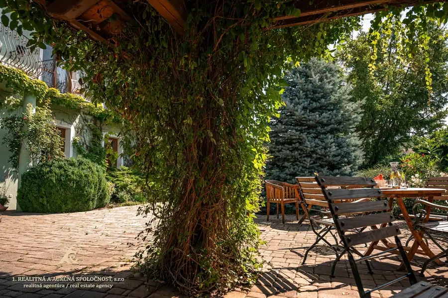
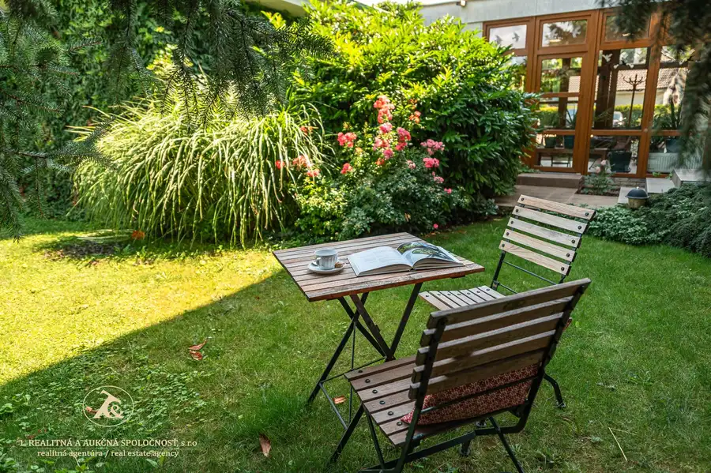
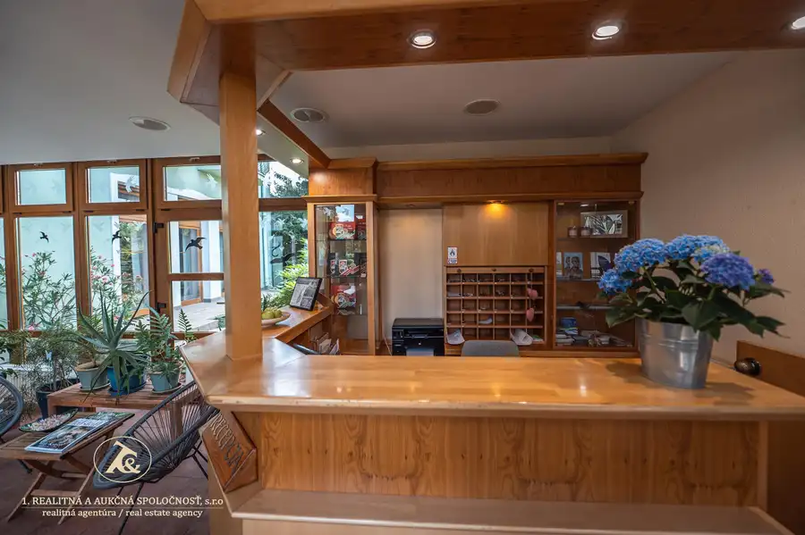
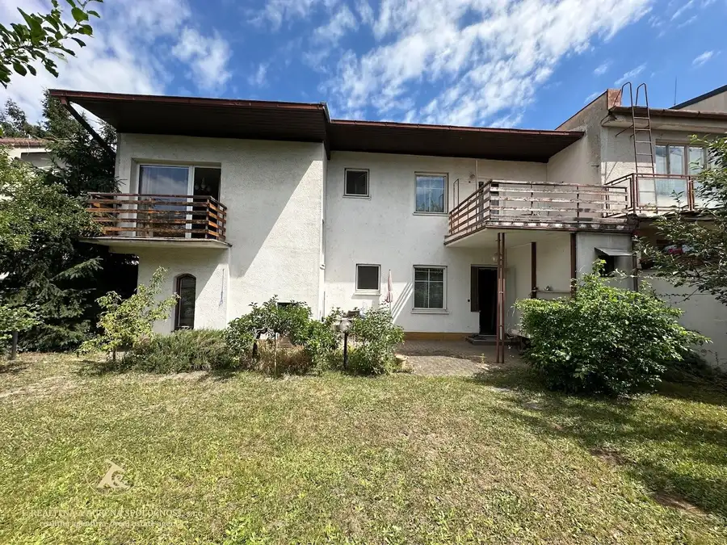
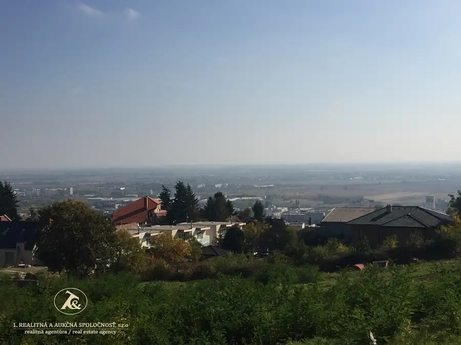
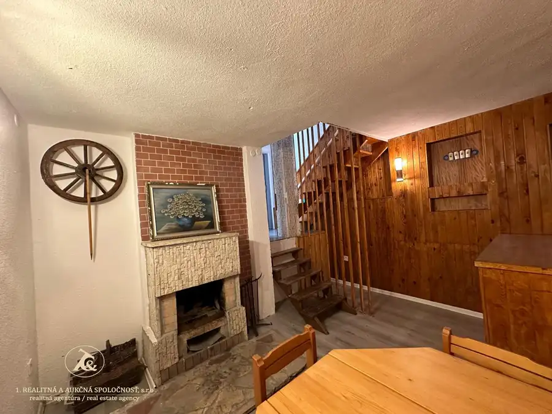

KÚPTE HOTOVÝ BIZNIS, NIE PROJEKT NA PAPIERI Penzión Tematín pri Piešťanoch – etablovaná značka, fungujúca prevádzka a priestor na ďalší rast
Moravany nad Váhom



- Plocha1260 m²
- StavKompletná rekonštrukcia
- VlastníctvoOsobné
O nehnuteľnosti
Penzión Tematín pri Piešťanoch – etablovaná značka, fungujúca prevádzka a priestor na ďalší rast2 359 m² pozemok | 1 260 m² podlahová plocha | 21 izieb | 48 stálych lôžok + 4 prístelky | reštaurácia 80 miest + salónik 20 miest + terasa s grilom 50 miest | wellness 122 m² | parkovanie 22 áutPonúkame na predaj Penzión Tematín v Moravanoch nad Váhom, len približne 3 km od Piešťan. Ide o etablovaný gastronomicko-ubytovací koncept s vlastnou značkou, dlhoročnou tradíciou a vybudovanou klientelou – teda nehnuteľnosť spojenú s fungujúcou prevádzkou a okamžitou možnosťou pokračovať v podnikaní.Objekt s úžitkovou plochou približne 1 260 m² sa nachádza na upravenom a kompletne oplotenom pozemku s výmerou 2 359 m². Ponúka 21 izieb, 2 apartmány, reštauráciu s kapacitou približne 80 osôb, salón, krytú terasu, profesionálne vybavenú kuchyňu a wellness centrum s rozlohou 122 m².Pre investora je podstatné najmä to, čo už existuje:etablovaná značka a dobré meno,fungujúca reštaurácia a ubytovanie,vybudovaná klientela a prevádzkové zázemie,kompletné vybavenie a technológia,atraktívna lokalita pri Piešťanoch,možnosť okamžitého pokračovania v prevádzke,zároveň priestor na repositioning, modernizáciu a zvýšenie hodnoty aktíva.Potenciál nehnuteľnosti pritom presahuje súčasný koncept. Objekt je vhodný aj na ďalšie využitie – napríklad ako boutique hotel, prémiové zariadenie pre seniorov, zdravotnícke či terapeutické centrum, firemné sídlo s ubytovaním alebo súkromná rezidencia.Výhodou je aj D1 v dosahu a výborná dostupnosť z Bratislavy a Viedne.Nehnuteľnosť sa predáva kompletne zariadená a vybavená, vrátane interiéru a technologického vybavenia. Bez tiarch.Cena: 1,5 mil. EURAk hľadáte nehnuteľnosť, ktorá nie je iba „stavbou s potenciálom“, ale predstavuje existujúce aktívum, fungujúci koncept a zároveň priestor na ďalší rozvoj, Penzión Tematín stojí za osobné posúdenie.Odporúčame osobnú obhliadku.Nie je to len nehnuteľnosť. Je to etablovaná značka, fungujúca prevádzka a priestor na ďalší rozvoj.Radi Vám osobne predstavíme:• nehnuteľnosť a jej zázemie• súčasný koncept a možnosti pokračovania prevádzky• potenciál ďalšieho rozvoja a repositioningu• investičné možnosti objektuIng. Andrea BielikRealitný maklér 1. realitnej a aukčnej spoločnosti, s.r.o.📞 +421 903 205802✉️ andrea.bielik@realitna.skOsobná obhliadka po dohode.
Parametre
- Druh
- Hotel, penzión, ubytovňa
- Dátum zverejnenia
- 09. 09. 2026
- Elektrina
- Na pozemku, Na pozemku - 400 V
- Odpadové vody
- Na pozemku - Čistička odpadových vôd
- Orientácia
- Západná
- Plyn
- Na pozemku
- Počet garáží
- 1
- Počet izieb / miestností
- 21
- Počet nadzemných podlaží
- 2
- Počet podzemných podlaží
- 1
- Rok kolaudácie
- 2002
- Stav nehnuteľnosti
- Kompletná rekonštrukcia
- Telekomunikácie
- Telefón, Internet
- Typ
- Predaj
- Typ konštrukcie
- Tehlová
- Vlastníctvo
- Osobné
- Voda
- Na pozemku
- Vybavenie
- Balkón, Terasa, Garáž, Pivnica
- Vykurovanie
- Ústredné
- Zastavaná plocha
- 656 m²
- Úžitková plocha
- 1260 m²
Kde to je


Mohlo by Vás zaujímať

BytNové 670 000 €Dom, ktorý si nekupujete pre to, aký je dnes. Kupujete si ho pre to, kde je – Patrónka, ul. Západný rad, Bratislava - Staré Mesto Staré Mesto, Bratislava 175 m²
PozemokNové Cena na vyžádáníPredaj atraktívneho pozemku o výmere 745 m2 s neobmedzeným výhľadom v Rači - Popolná ul. Rača, Bratislava 745 m²
Chalupa, rekreačný domčekNové Cena na vyžádáníDlhodobý celoročný prenájom chaty – Šaštín Stráže | 5 min, od jazera Šaštín-Stráže 90 m²